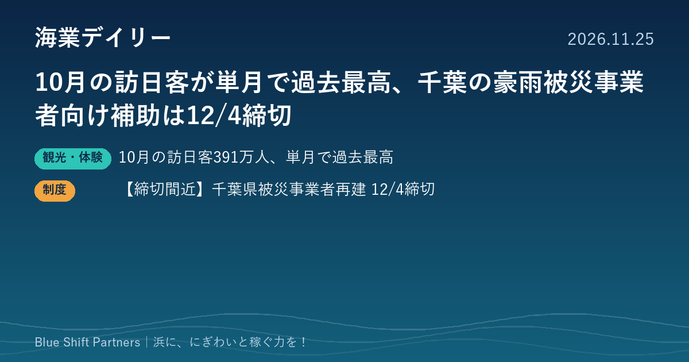

2026.11.25
10月の訪日客が単月で過去最高、千葉の豪雨被災事業者向け補助は12/4締切

日本政府観光局（JNTO）が10月の訪日外客数の推計値を公表し、単月として過去最高となりました。あわせて、令和8年8月千葉豪雨で被災した小規模事業者向けの千葉県の補助金が、12月4日に1回目の締切を迎えます。
10月の訪日外客数は391万人、単月として過去最高に（JNTO推計値）
日本政府観光局（JNTO）は11月18日、2026年10月の訪日外客数（推計値）を3,912,500人と公表しました。前年同月比0.4%増で、単月として過去最高です。20市場で10月として過去最高となり、紅葉シーズンの始まりや、アジアの連休、欧州のスクールホリデーなどが増加の背景に挙げられています。
ここがポイント：観光の繁忙期は春と秋に集中しやすく、浜の食堂や体験、宿泊にとっては、秋から冬にかけての来訪をどう取り込むかが課題になります。国の観光立国推進基本計画には地方部の延べ宿泊者数の目標もあり、漁村での体験や地魚の食事を、外国人旅行者に届ける準備を進める材料になります。
出典：日本政府観光局（JNTO）「訪日外客数（2026年10月推計値）」（2026-11-18）
【締切間近】「千葉県被災小規模事業者再建支援事業補助金」、1回目の締切は12月4日17時
千葉県は、令和8年8月千葉豪雨（8月13日〜14日）で被害を受けた県内の小規模事業者を対象に、事業再建の費用の一部を補助しています。対象経費は施設修繕費、機械装置費、設備廃棄費で、補助率は2/3以内、上限100万円（下限10万円）です。申請は電子申請または郵送で、1回目の締切は12月4日（金）17時、2回目は令和9年1月中旬の予定です。
ここがポイント：豪雨で傷んだ直売所や食堂、加工場の修繕、冷蔵設備などの入れ替え、使えなくなった設備の処分に充てられる可能性があります。対象になるかどうかや必要書類は、県の申請要領で早めに確かめておくと安心です。
出典：千葉県 商工労働部経済政策課「千葉県被災小規模事業者再建支援事業補助金の申請受付開始について」（2026-10-30）
訪日客が過去最高を更新しても、都市部や有名観光地に集まりやすい傾向があります。漁村が選ばれるには、予約できる体験、英語のひとこと案内、地魚を食べられる場所といった「受け皿」を先に用意しておくことが近道です。被災された事業者の方は、まず補助金の締切に間に合うよう、申請要領を確認してみてください。